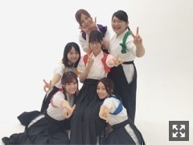
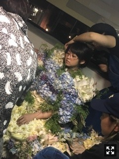
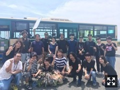
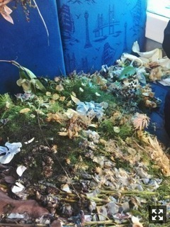

| 2017/09 05 Tue | 伊藤万理華 プリンシパル。780回目 |
19thシングル選抜
初めて二列目になりました。
ありがとうございます。
井上小百合と共に福神になれたことが
心から嬉しいです！
本当ならもっと言いたいことあるはずなのに
そればっかりになってしまいます。
とにかく、応援してくださるみなさんへ
感謝の気持ちでいっぱいです。
ありきたりですみません。
秋に向けていろんな制作がんばってます！

先日あさひなぐ完成披露試写会がありました。
こざき先生にかけていただいた
有難い御言葉のおかげで
寿命が少し延びました。
19thシングル
「いつかできるから今日できる」
どうぞよろしくお願いします。
昨日の放送後、真っ先に
連絡くれたのが文乃！！！
あー、うれしい、、ありがとうね。
9月2日にEテレで放送された
「テクネ〜映像の教室〜」
みなさん見ましたか？
『花枯去影』
時間操作
タイムラプス
ステンドグラスのついたバス
棘に囲われた右足
赤いスニーカーの左足
生花のドレス

最初、ドレスは重くてひとりで歩けないけど
時間が経つに連れて何かから解かれるように
身体が軽くなっていくのを感じる。
枯れていくことに対する
ネガティブな感情は無くなりました。
私の背中を押してくれる、
後押ししてくれる貴重な作品です。

みんなのやりきった顔！
お疲れ様でしたああ
監督 柳沢さん
撮影 岡村さん
照明 上野さん
美術 栗林さん
衣装 酒井さん
音楽 戸波さん
編集 佐々木さん
重力猫でお世話になったスタッフさん再び
ご一緒できてうれしかった、！
制作陣のみなさん
超タフで超かっこよかった！
あの時間を乗り越えられたのは
絶対面白くなるって信じられたからだなあ。
はじめてチームの一員になれてた気がした、
枯れて身軽になって
解放されてバスの外に出た瞬間、
ことばにできない
充実感達成感に溢れました。
何度も味わいたくなる感覚でした。
映像って面白い、奥が深い。

好きだったモリゾーエリア
カメラの死角、、
座席に草が生い茂ってるみたいな
良い違和感。
そして実はこれ、ドレスの裾という、、
この写真一枚だけで素敵。
夢があるよねえ
たくさんの人の目に届いたら嬉しい。
「花枯去影 DECAY / Dress woven by real flowers / 乃木坂46 伊藤万理華」
発売中 anan/non-no/Ray/NYLON/装苑/StreetJack/Seventeen/日経エンタテイメント！
9月6日 MdN/ダ・ヴィンチ
9月8日 BOMB
9月10日 FINEBOYS/MEN'S NON-NO
9月15日 LARME
9月24日 SamuraiELO
フリーペーパー セブンぴあ
あさひなぐでいっぱい〜
こんな掲載されること滅多にないよ〜〜
他にも出るかも。その時はおしらせします。
ぜひチェックしてね
まりか